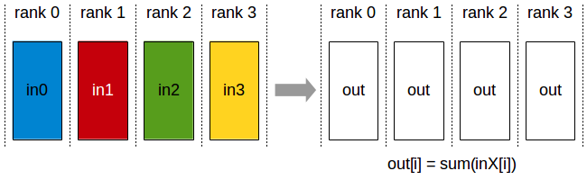
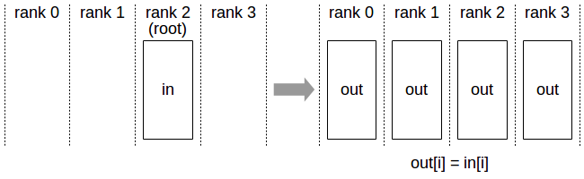
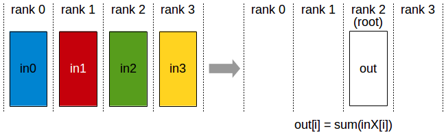
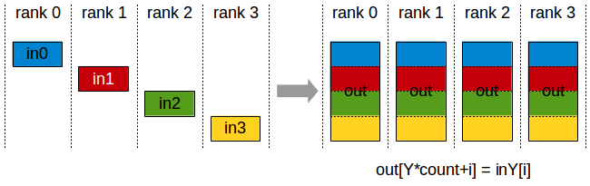
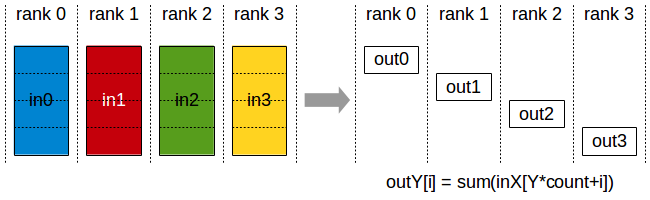
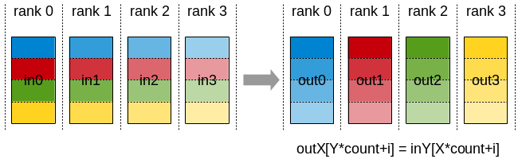
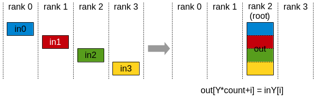
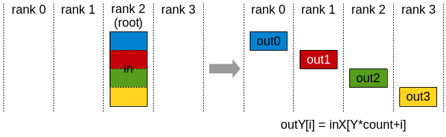

Collective Operations
Collective operations have to be called for each rank (hence CUDA device), using the same count and the same datatype, to form a complete collective operation. Failure to do so will result in undefined behavior, including hangs, crashes, or data corruption.
AllReduce
The AllReduce operation performs reductions on data (for example, sum, min, max) across devices and stores the result in the receive buffer of every rank.
In a sum allreduce operation between k ranks, each rank will provide an array in of N values, and receive identical results in array out of N values, where out[i] = in0[i]+in1[i]+…+in(k-1)[i].

All-Reduce operation: each rank receives the reduction of input values across ranks.
Related links: ncclAllReduce().
Broadcast
The Broadcast operation copies an N-element buffer from the root rank to all the ranks.

Broadcast operation: all ranks receive data from a “root” rank.
Important note: The root argument is one of the ranks, not a device number, and is therefore impacted by a different rank to device mapping.
Related links: ncclBroadcast().
Reduce
The Reduce operation performs the same operation as AllReduce, but stores the result only in the receive buffer of a specified root rank.

Reduce operation: one rank receives the reduction of input values across ranks.
Important note: The root argument is one of the ranks (not a device number), and is therefore impacted by a different rank to device mapping.
Note: A Reduce, followed by a Broadcast, is equivalent to the AllReduce operation.
Related links: ncclReduce().
AllGather
The AllGather operation gathers N values from k ranks into an output buffer of size k*N, and distributes that result to all ranks.
The output is ordered by the rank index. The AllGather operation is therefore impacted by a different rank to device mapping.

AllGather operation: each rank receives the aggregation of data from all ranks in the order of the ranks.
Note: Executing ReduceScatter, followed by AllGather, is equivalent to the AllReduce operation.
Related links: ncclAllGather().
ReduceScatter
The ReduceScatter operation performs the same operation as Reduce, except that the result is scattered in equal-sized blocks between ranks, each rank getting a chunk of data based on its rank index.
The ReduceScatter operation is impacted by a different rank to device mapping since the ranks determine the data layout.

Reduce-Scatter operation: input values are reduced across ranks, with each rank receiving a subpart of the result.
Related links: ncclReduceScatter()
AlltoAll
In an AlltoAll operation between k ranks, each rank provides an input buffer of size k*N values, where the j-th chunk of N values is sent to destination rank j. Each rank receives an output buffer of size k*N values, where the i-th chunk of N values comes from source rank i.

AlltoAll operation: exchanges data between all ranks, where each rank sends different data to every other rank and receives different data from every other rank.
Related links: ncclAlltoAll().
Gather
The Gather operation gathers N values from k ranks into an output buffer on the root rank of size k*N.

Gather operation: root rank receives data from all ranks.
Important note: The root argument is one of the ranks, not a device number, and is therefore impacted by a different rank to device mapping.
Related links: ncclGather().
Scatter
The Scatter operation distributes a total of N*k values from the root rank to k ranks, each rank receiving N values.

Scatter operation: root rank distributes data to all ranks.
Important note: The root argument is one of the ranks, not a device number, and is therefore impacted by a different rank to device mapping.
Related links: ncclScatter().